Bond of Flame
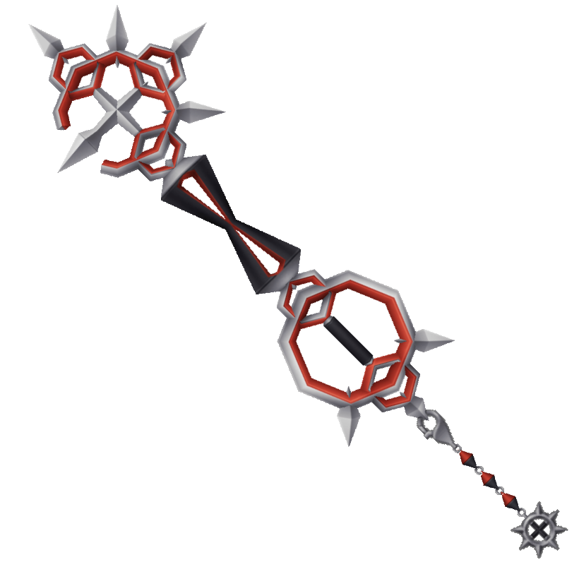
Características:
The Keychain, teeth, and blade resembles Axel's Eternal Flames chakrams. When it is swung, tiny chakrams and flames appear. The two chakrams that make up the Keyblade are joined by a metal numeral 8 and they also have eight total spikes, a reference to Axel's position within the Organization. The Keyblade's name references the friendship between Roxas and Axel, and later the debt Axel owed to Sora.
Circle of Life
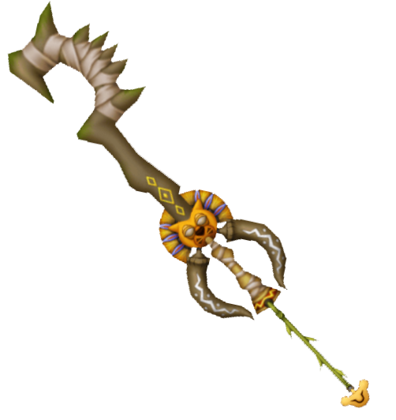
Características:
The handguard of the Circle of Life is comprised of two large fangs that curve downward and do not connect to the pommel of the handle. The rainguard and Keychain are both lion heads, specifically the head of Simba as drawn by Rafiki in The Lion King movie. The blade is a short wooden shaft that extends upwards a little, then curves into a backwards C-shape. The C-shape is wrapped in white cloth strips and wooden spikes protrude from the wrappings, which serve as the teeth of the key. The chain of the Keychain seems to be a vine, rather than metal links.
Decisive Pumpkin
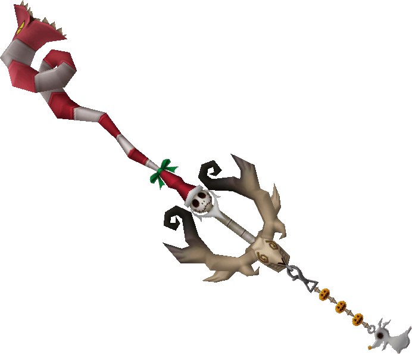
Características:
Similar to the theme in The Nightmare Before Christmas, Decisive Pumpkin sports a Christmas motif with a tint of Halloween. The main hand guard is designed with Dr. Finklestein's skeleton reindeer, with the emblem of Jack wearing a Christmas Hat at the central part. The blade's body resembles the giant snake seen in the film The Nightmare Before Christmas swallowing presents and Christmas trees, but could also be a version of Halloween Town's dragon-like fountain with a candy cane pattern. The chains sport a Jack-o-Lantern motif, symbolizing Jack's image as the Pumpkin King, and the token is Zero. The symbols that appear when the Decisive Pumpkin makes contact with an enemy are Jack-o'-Lanterns, furthering the Halloween motif. It makes jingling sounds when it hits an enemy, completing the Christmas theme.
Destiny's Embrace

Características:
The Keyblade is round and curvaceous to the point of appearing harmless. One side of the hilt is formed in the shape of a breaking ocean wave, while the other is formed into a beige vine of sand that wraps around the shaft, which is colored to resemble a sunset. The vine connects to a bouquet of colorful flowers, which form the teeth of the Keyblade and entwine to outline a heart. A red silken keychain connects the hilt to the paopu fruit token, a recurring symbol of the bond between Sora and Kairi. Kairi's version of the Destiny's Embrace is slightly shorter than Aqua's.
Ends of the Earth
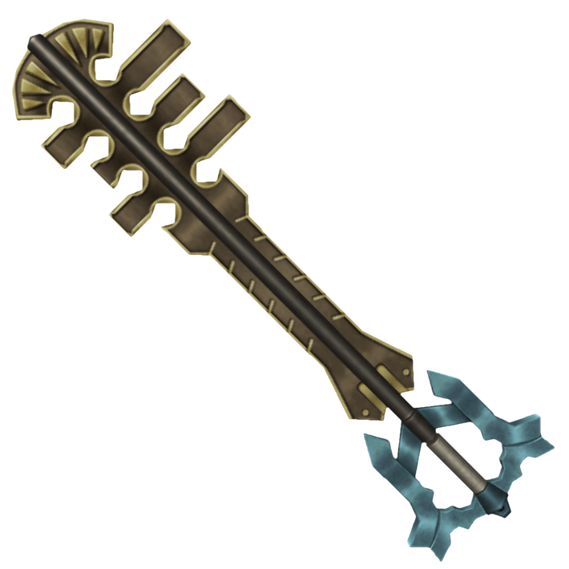
Características:
Being an upgraded version of the Earthshaker, the Ends of the Earth features a longer and more extravagant blade with teeth on both sides at the tip of the blade. The hand guard also elongates to form a wing-like shape of sorts. The Keychain is a rock fragment similar to the one on the Earthshaker. In Kingdom Hearts II Final Mix, it doesn't have a Keychain, as the Keychain had not been designed by the time that Kingdom Hearts II Final Mix was released.[citation needed] In Kingdom Hearts Birth by Sleep, the blade's length appears to be slightly smaller, and the teeth of the blade aren't quite as wide as the Kingdom Hearts II Final Mix version. "Ends" can refer to the death or result of something, while "earth" refers to the Latin meaning of Terra's own name. "Bane" is a source of misery. Gaia is a deity in Greek mythology representing the Earth and the mother of the Titans. Her Roman equivalent was named "Terra" or "Tellus". "Gaia" is also a recurring term in the Final Fantasy series. The term "Ends of the Earth" is also a common colloquialism for extreme effort or will, possibly symbolizing the powerful will that Terra possesses.
Fatal Crest
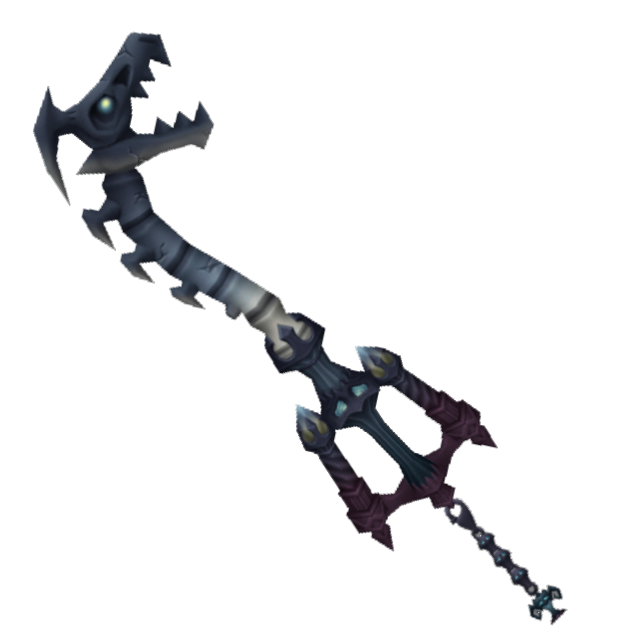
Características:
The neck of the Keyblade appears to be that of a skeletal dragon, of which still has life in some of it. Unlike most Keyblades, this Keyblade features a curved neck. The handle is the landmark that defines The Underworld and is seen on the river Styx. The token is the Hades Cup.
Fenrir
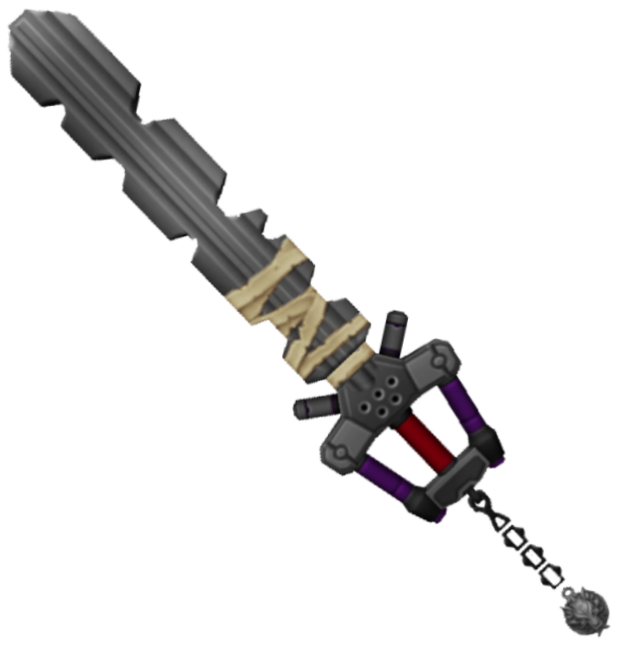
Características:
The Fenrir is based upon Cloud's Fusion Swords and, unlike all other Keyblades, takes on the appearance of a pin tumbler lock key. In Kingdom Hearts II, the Fenrir has a red handle similar to that of the Fusion Swords and a dark grey guard. Two rods jut out of the top of the guard, similar to the Fusion Swords' racks on Cloud's motorcycle from Final Fantasy VII: Advent Children. The blade is the shaft of a pin tumbler lock key, with the base bearing bandages similar to those on Cloud's Buster and Fusion Swords in Kingdom Hearts. The Keychain is a light grey, with the token being Cloud's Fenrir pendant from his Advent Children outfit. The variety seen at the Keyblade Graveyard has darker bandages, and lacks a Keychain.
Follow the Wind
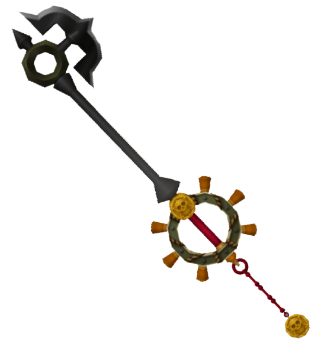
Características:
The teeth of the Keyblade are shaped like a ship's anchor. The guard resembles the ship's helm. There is one of the cursed Aztec Medallions on the Keyblade's hilt and another as the Keychain token. The Keyblade produces Medallion emblems when it hits an object. The variety seen at the Keyblade Graveyard has a darker, greyscale color scheme and a thinner anchor at the teeth. It also lacks a Keychain.
Guardian Soul
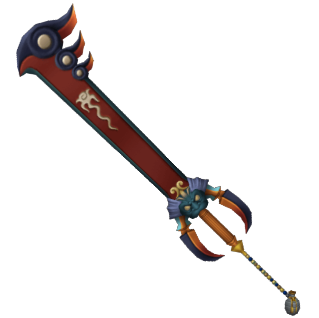
Características:
The blade is similar to Auron's strongest weapon in Final Fantasy X, the Masamune. The hilt guard is an ogre-like face, with yellow eyes and fin like extrusions, while the token is Auron's jug of sake. In addition, the sparks that appear when the blade strikes an opponent are Yevon symbols, a reference to the main plot of Final Fantasy X, despite that Auron was instrumental in revealing the sinister truth of the religion. The name references Auron's former occupation as a Guardian for Yuna and Braska in Final Fantasy X. As he was an unsent soul in that game and is a soul in the Underworld in Kingdom Hearts II, the name actually serves as a pun on Auron himself; he is a literal guardian soul.
Gull Wing
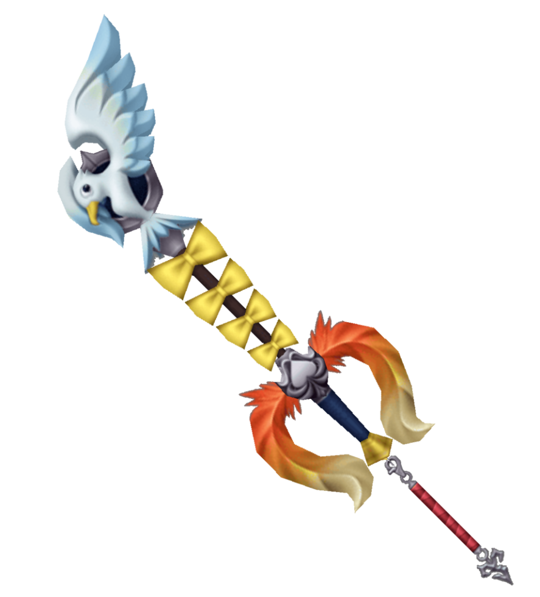
Características:
The Gull Wing's appearance takes after the trio of young women by the same name. Its Keychain is the symbol of the Zanarkand Abes, the blitzball team that Final Fantasy X's Tidus and Jecht belong to, which was then reused as part of Yuna's Gunner dressphere; the symbol itself is attached to the weapon by the wrapping of Yuna's long ponytail from Final Fantasy X-2. It is attached by a chain to the Keyblade's hilt, this resembling that of Paine's sword, particularly the spade design where the handle meets the blade (originally a spade-shaped skull in Final Fantasy X-2). The guard is made from two feathers that were once a part of Rikku's outfit in Final Fantasy X (tied to the end of the two braids protruding from the base of her hair), while the blade is made from the bows seen on the arms of her Thief dressphere from Final Fantasy X-2. The teeth of the Keyblade is quite literally the wing of a gull, the mascot of the Gullwings sphere hunter group. The Gull Wing takes its name from the Gullwings, a group of sphere hunters that appear in Final Fantasy X-2, who are led by Yuna, Rikku, and Paine.
Hero's Crest

Características:
The blade, hand guard, and tip are similar to Greek Ionic architecture. The teeth seem to take the form of a star, possibly referring to the fact that at the end of the storyline of the first game in Olympus Coliseum, there is a faint silhouette of Hercules in the stars, or Sora, Donald, and Goofy's silhouette in the second game. The token is the symbol of the Gods of Olympus and is also the Olympus Stone Sora borrowed from Hercules to protect him from the magic of the Underworld.
Hidden Dragon
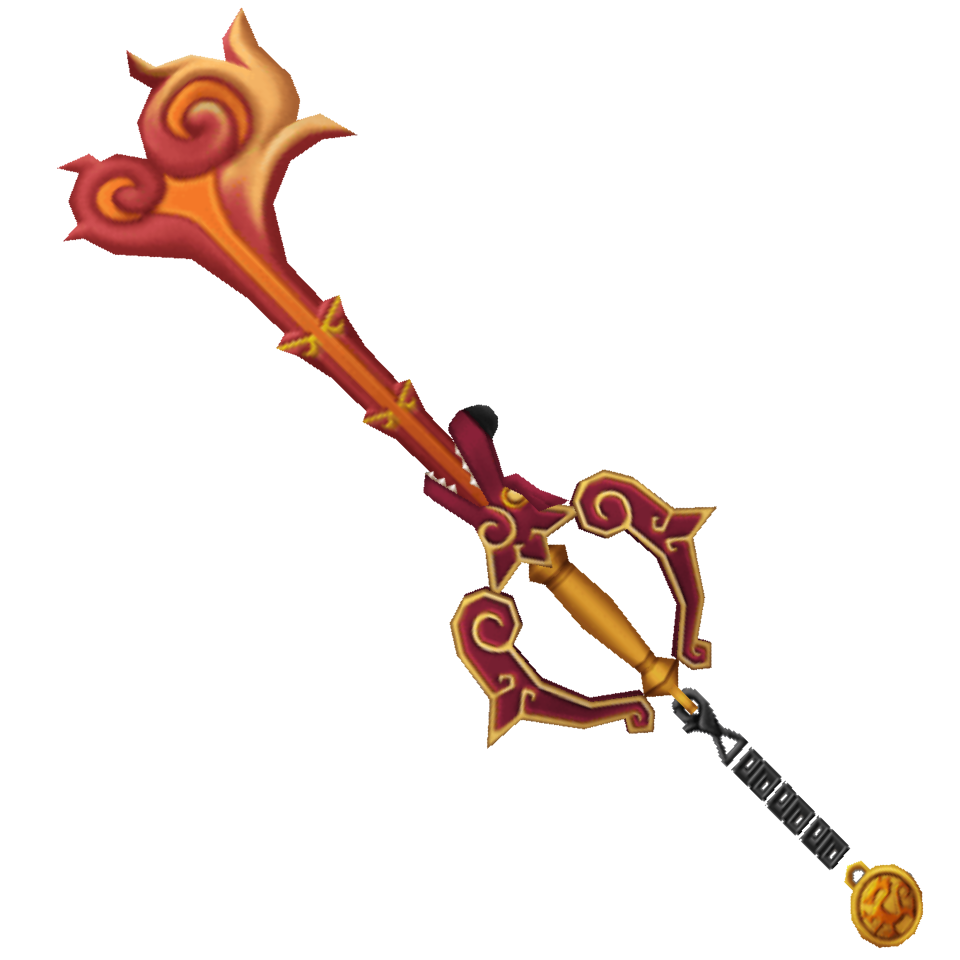
Características:
The Hidden Dragon Keyblade is designed with an oriental dragon theme. The guard is similar to the color and shape of Mushu. Its blade is a burst of fire coming out of a dragon's mouth, while the Keychain's token is the medal Mulan receives for saving the Emperor. The name for this Keyblade is most likely based on the title of the film Crouching Tiger, Hidden Dragon, which is also set in ancient China.
Kingdom Key

Características:
The Kingdom Key is depicted as a classic skeleton key approximately 3.5' long, with a long silver Keychain extending from the hilt, and a Hidden Mickey token on the end of the Keychain. In Kingdom Hearts, the token is formed from three spheres, while in other games the token is flat and seemingly cut from sheet metal. The blade and teeth of the Keyblade are silver, the rainguard is blue, and the guard is bright gold. The teeth of the Keyblade form the outline of a crown which matches the crown charm Sora wears.
Kingdom Key D
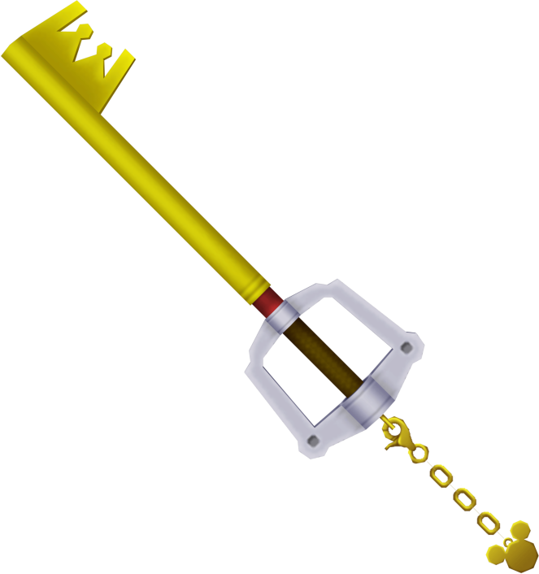
Características:
The Kingdom Key D is a mirror of the Kingdom Key, and this purpose is reflected in its coloration - where Sora's Keyblade is silver, Mickey's is gold, and vice-versa. Even the rainguard, which is blue on Sora's Kingdom Key, is red on Mickey's, although both Keyblades possess a dark-colored handle.
Monochrome
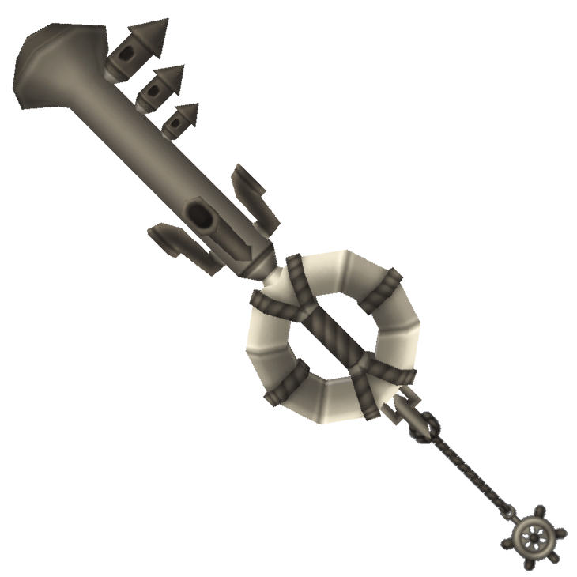
Características:
The Monochrome's guard is a lifesaver float while the blade is a steamboat stack. The Keychain is a ship's wheel, possibly that of the Steamboat Willie. The teeth also resemble the steam whistles from Steamboat Willie. Other than that, the Monochrome resembles the transmitter of the Graham Bell phone. "Monochrome" refers to images executed in shades of a single color, and is often used to describe things that are in black and white, like the world of Timeless River.
Mysterious Abyss
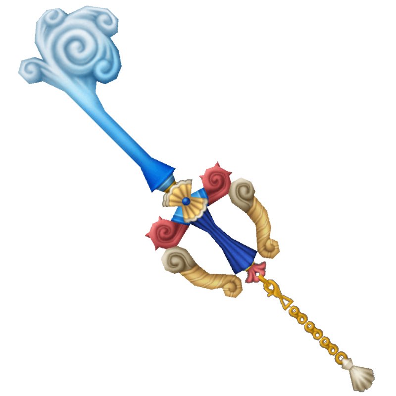
Características:
The teeth and blade of the Keyblade are in the shape of a water spout. The token is in the shape of a white shell connected to the handle which is made up of assorted shells by a golden chain. In the center of the guard is a shell that has a small blue pearl in the middle.
Oathkeeper
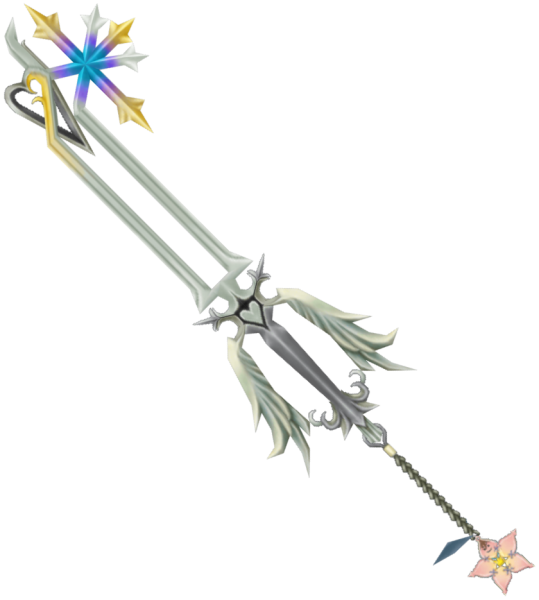
Características:
The Oathkeeper's shaft displays two hearts, and its handle bears two angel wings, contrasting the bat wings that comprise Oblivion's handle. The teeth are fashioned in the shape of the Kanji for "light" (光), corresponding to the Oblivion's kanji for "darkness". Its Keychain token is Kairi's Wayfinder, a star sewn together from Thalassa Shells. In Castle Oblivion, it is replaced by Naminé's trinket until the illusion over Sora's Thalassa Charm breaks. When it is summoned by the user, Oathkeeper emerges in a bright, yellowish-white light.
Oblivion

Características:
Oblivion is similar in shape to the Kingdom Key, though is black and has a longer reach. The hilt guard is comprised of two bat-like wings extending downward. The teeth are in the shape of the Kanji for "darkness" (闇). The Keychain's token is a black version of Sora's crown necklace. A chain-like design runs up the length of the blade. The diamond in its hilt also resembles the diamond in the original logo of Hollow Bastion. When the Oblivion is summoned in Kingdom Hearts II, black smoke and violet sparks surround it. The Keyblade's name means a "state of forgetting or having forgotten", and its Japanese name has the same basic meaning. The Oblivion is often associated with the memories that are passing away, such as when Sora reaches the last floors of Castle Oblivion, or when Roxas begins forgetting Xion following her destruction.
Photon Debugger
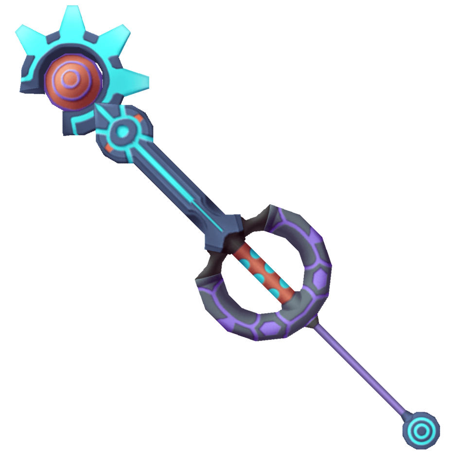
Características:
The Photon Debugger looks similar to the inhabitants of Space Paranoids, appearing to be constructed of computer circuitry. The Keychain's token is Tron's Identity Disk. Its name comes from two words; debugging is a way to eliminate a computer virus or bugs, similar to how the Keyblade eradicates Heartless. Photons are the fundamental quantum particles that compose light, and Sora is the wielder of the Keyblade of Light.
Rumbling Rose
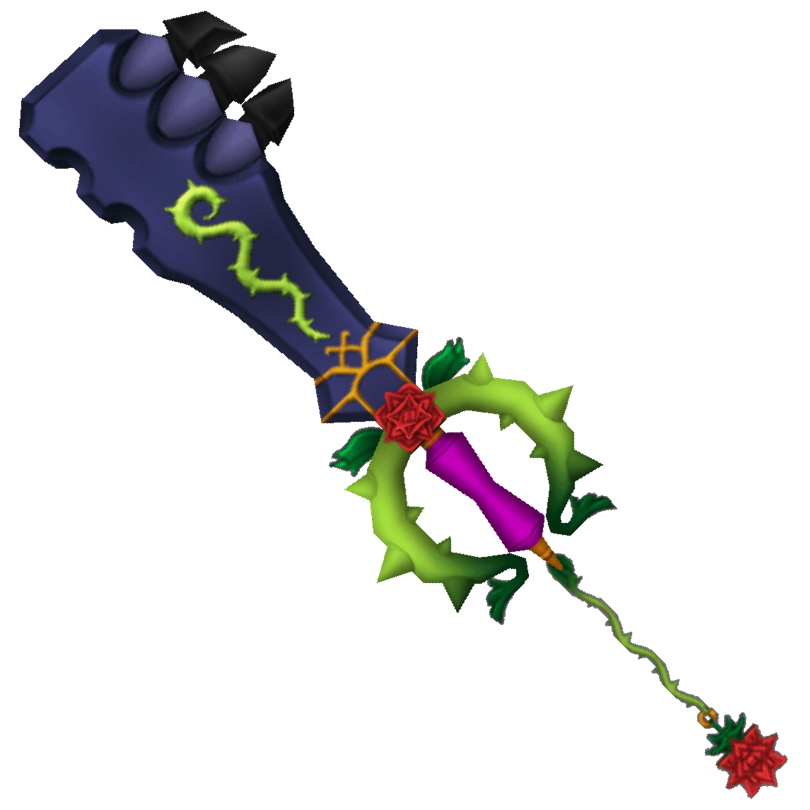
Características:
The guard and Keychain are rose-like, with thorns and roses that decorate it. The teeth seem to be claws which represents the owner of the rose, The Beast. It could also be to represent how much the Beast wants to protect the Rose. The rose based design is based on the Beast's Rose. Rumbling Rose is a pun on "rambling rose", a type of flowering shrub native to Japan and China that was imported into North America and has since become an invasive plant.
Sleeping Lion
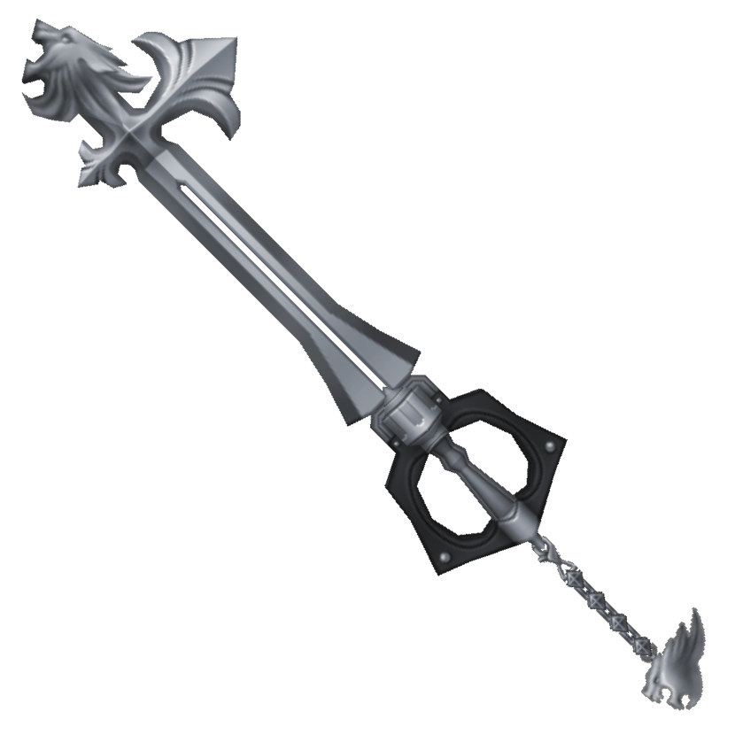
Características:
The Sleeping Lion bears a resemblance to Squall's Revolver Gunblade from Final Fantasy VIII. In Kingdom Hearts II, the Sleeping Lion has a dark grey hilt and a blade resembling the Revolver. At the tip is a lion head, with a fleur-de-lis as the teeth. The Keychain takes on a dark grey scheme, with the token also being a lion head with a moderate mane. The variety seen in the Keyblade Graveyard lacks the lion's head at the tip, and also lacks a Keychain.
Star Seeker
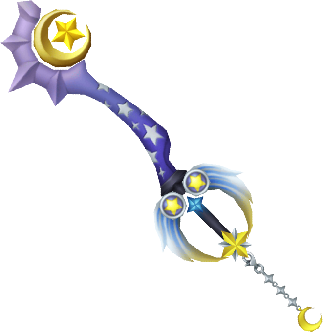
Características:
The guard appears to be two shooting stars. The blade is blue and decorated with stars, while the teeth is a crescent moon and a star. Strangely, in Kingdom Hearts Birth by Sleep, King Mickey holds Star Seeker in reverse, with the opposite side of the Keyblade used as the teeth. The Keychain design is a crescent moon. The Keyblade's name seemingly references Mickey and Sora's journeys to the various worlds, which are seen as stars. It also makes a reference to the worlds in the universe of Kingdom Hearts, since stars refer to the worlds. The Star Seeker is part of a group of weapons associated with the Mysterious Tower, along with the corresponding staff and shield. These weapons are decorated with crescent moons and stars, and are the second set of weapons available to the party.
Stormfall
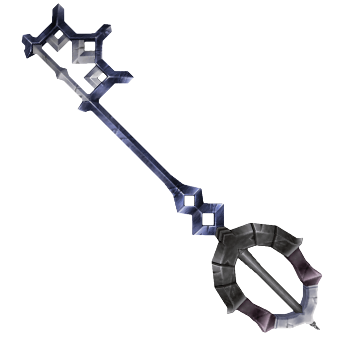
Características:
The Stormfall Keyblade's guard is circular and somewhat jagged around its edges. The upper half of the guard is black, the center is grey, and the bottom of it is white. The handle is a featureless, grey rod. The shaft of the Keyblade is thin and navy blue in coloration, except for the tip, which is silver. The base of the shaft also sports two diamond-shaped bumps. The Stormfall's teeth are comprised by a rectangular frame lined with four short, blunt spikes. This frame and the spikes are all navy blue. The teeth also have three silver pieces bent at right angles; two on the inside corners of the frame and one on the inside center of one side. The Keychain links and token resemble water drops. The Keyblade noticeably is a more straight and upgraded version of Rainfell.
Sweet Memories
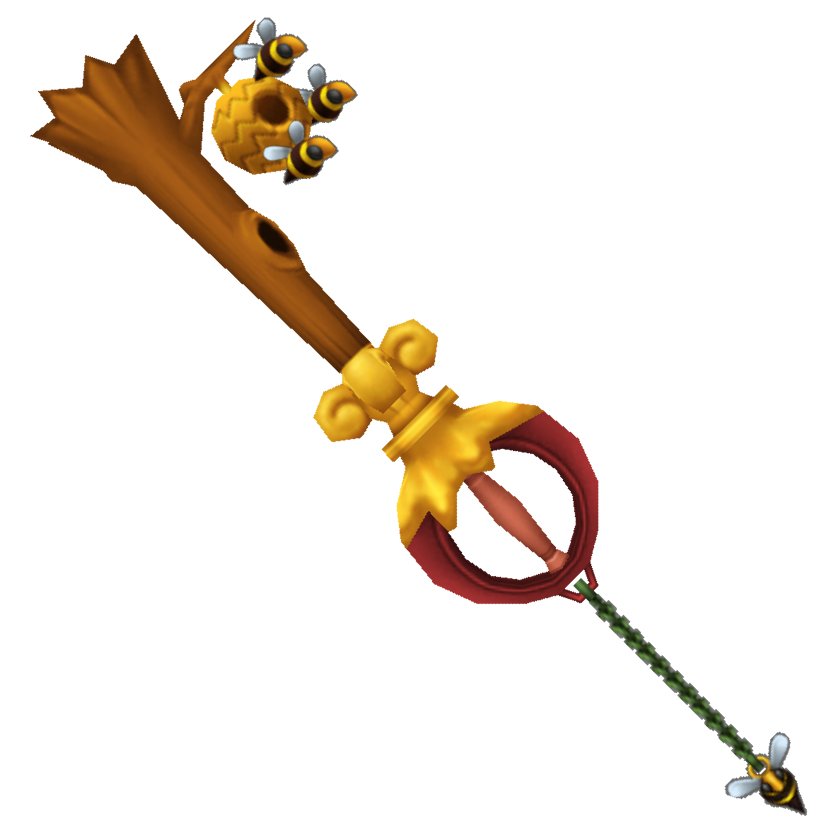
Características:
The Sweet Memories Keychain is designed around elements of the Hundred Acre Wood world. It consists of a honey-covered honey pot handle with a model of a tree trunk as the blade's shaft. The end of the key consists of a branch with a beehive being the teeth, due to Pooh's love for honey. Its Keychain design is a Honey Bee. "Sweet Memories" refer to Pooh regaining his memories of Sora, as well as the use of honey in the Keyblade's design.
Two Become One
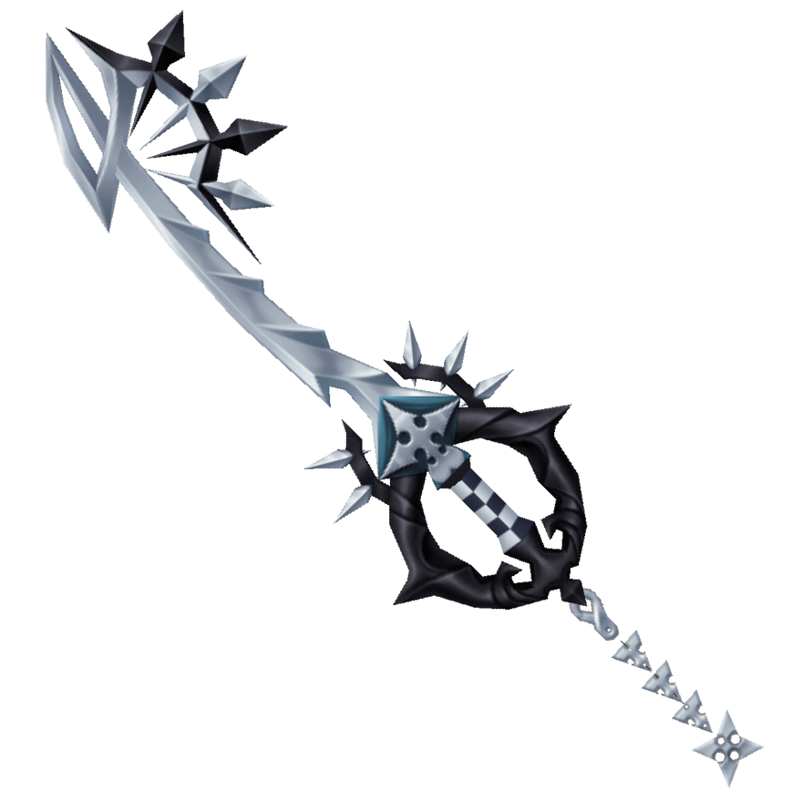
Características:
Two Become One is one of the more sword-like Keyblades, possessing a curved, notched blade that bears a slight resemblance to Soul Eater and Way to the Dawn, with a noticeably sharp edge. Its color scheme is derived from a fusion of Roxas's Oathkeeper and Oblivion Keychains, and the handle is composed of the same checkerboard pattern on Roxas's wristband. The Keyblade's design is also covered with references to Roxas's Nobody nature; the usual Nobody thorns make up the teeth and rainguard, which is black and rounded. The chain links are heavily stylized versions of the Nobody Emblem, and the full Nobody Emblem adorns the hilt. The token itself is Roxas's Nobody-thorn charm.
Ultima Weapon
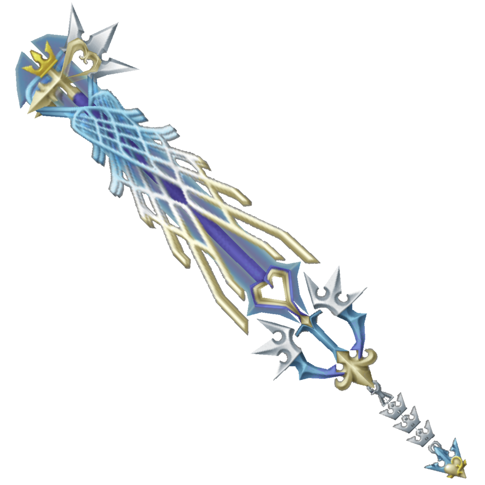
Características:
The Ultima Weapon Keyblade is named after the eponymous sword in the Final Fantasy series. The Ultima Weapon is typically shown within the Final Fantasy series as a long sword, with a glowing blue/white blade and a golden handle. It is usually the strongest weapon for the main protagonist in the games it appears in. The Kingdom Hearts II version retains most of its Kingdom Hearts version elements, except for the colors (blue, white and gold), the crown-and-heart keychain, and the Dream Sword. It also includes many more crowns into its design, including one at the tip of the blade, near the crown "teeth", two making up the guard, three in the chain, and the aforementioned combination of a crown and the original heart Keychain as the token.
Way to the Dawn
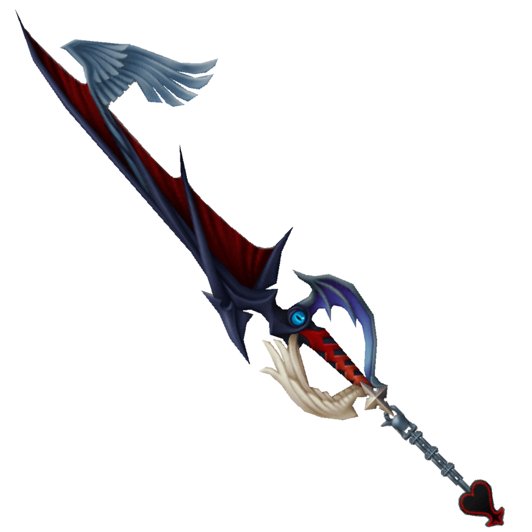
Características:
The Way to the Dawn greatly resembles the Soul Eater, but the once curved wing is now straight, and the Keyblade's guard is composed of one angelic wing and one demonic wing, similar to the guards of Sora's Oathkeeper and Oblivion keychains, respectively. Also, a dark angelic wing has been added to the top of the original blade of the Soul Eater to act as the teeth of the key. Its token is the Heartless Emblem, but without the spiked bars crossing it. Its name is derived from the ending scene of Reverse/Rebirth, in which Riku declares that he is taking the "road to dawn".
Winner's Proof

Características:
Winner's Proof displays exactly thirteen Mushrooms; four in the links and Keychain, two in the handle, six on the blade, and one of them serves as the teeth. The tip of the weapon bears a resemblance to a heart, making it similar to the Ultima Weapon. The Winner's Proof's name stems from the fact that to acquire it, Sora needs to pass thirteen tests, one for each Mushroom.
Wishing Lamp
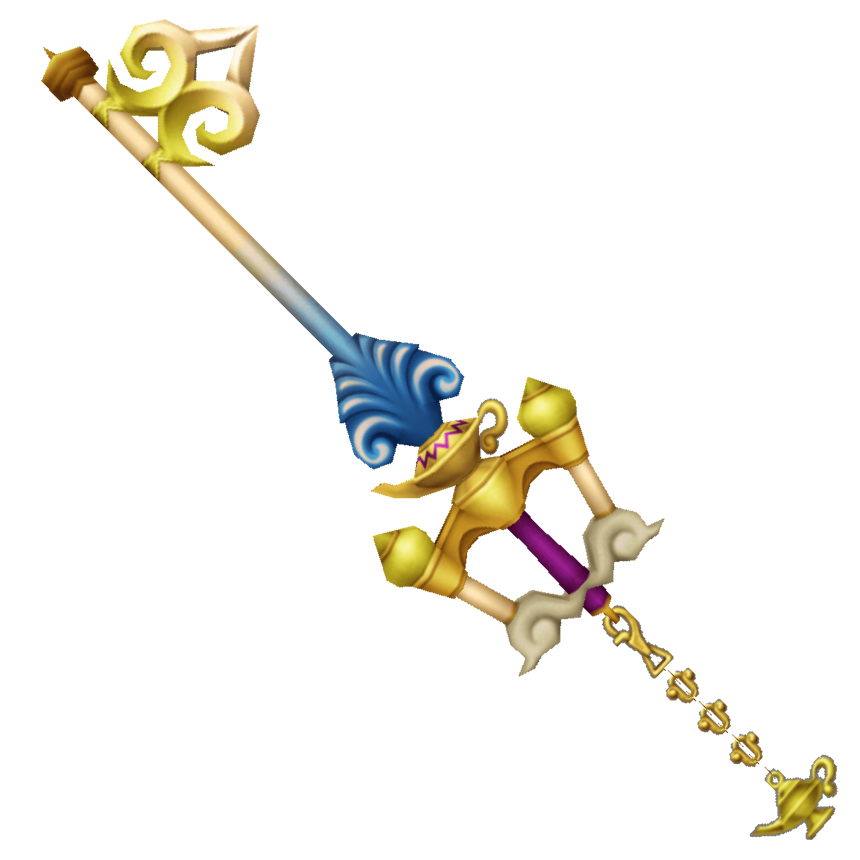
Características:
The guard is similar to the Agrabah palace towers, while the blade rises from a wishing lamp at the center-top of the guard. The Keychain is Genie's wishing lamp. The variety seen at the Keyblade Graveyard ends with a flat point at the end of the shaft rather than the palace tip. The teeth are also larger, and it lacks the lamp and smoke at the hilt. It also lacks a Keychain.